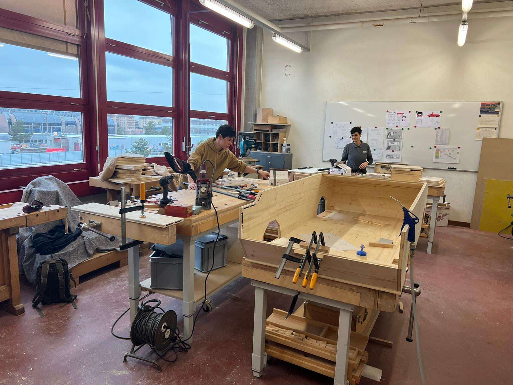
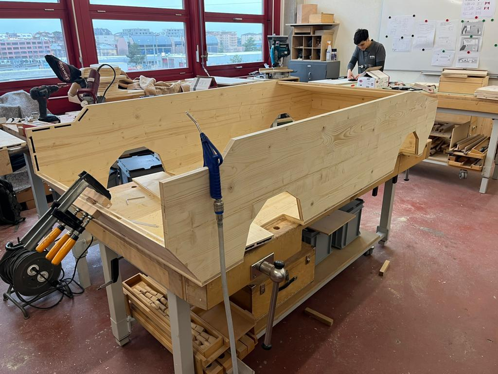
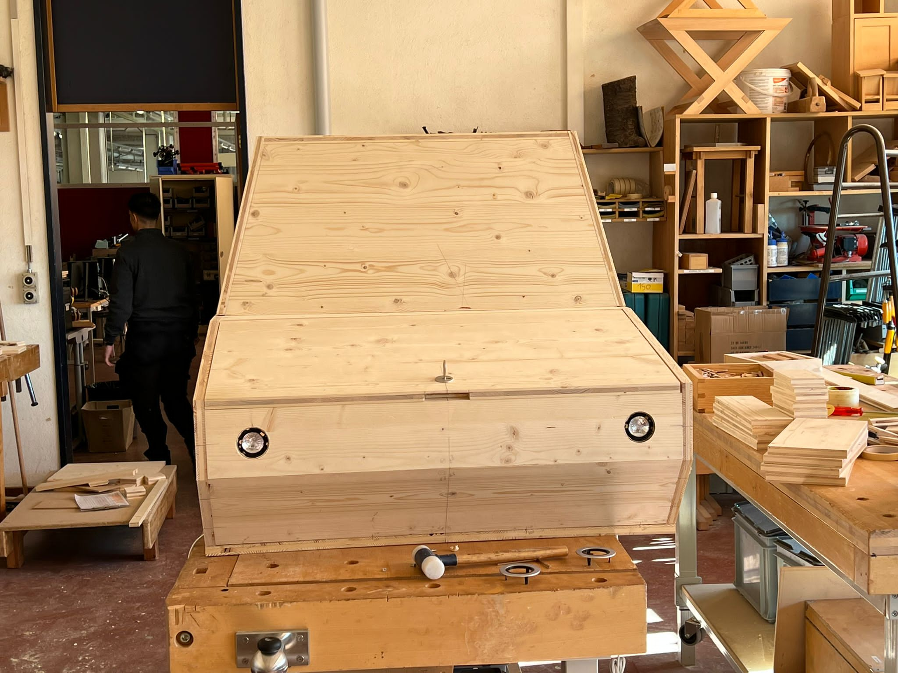
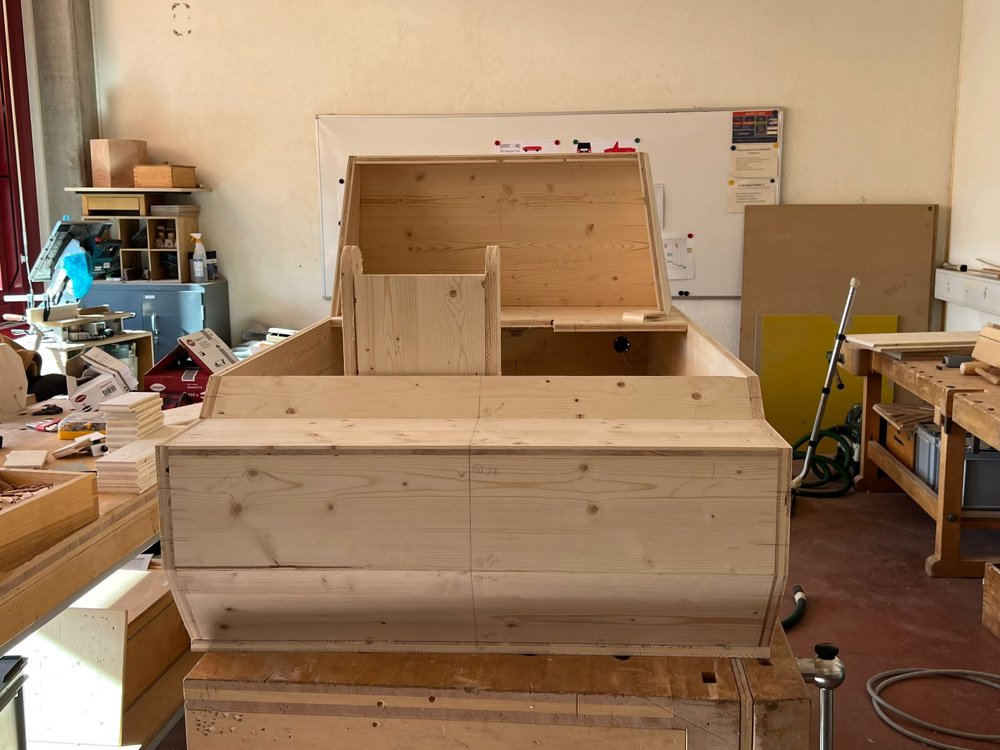
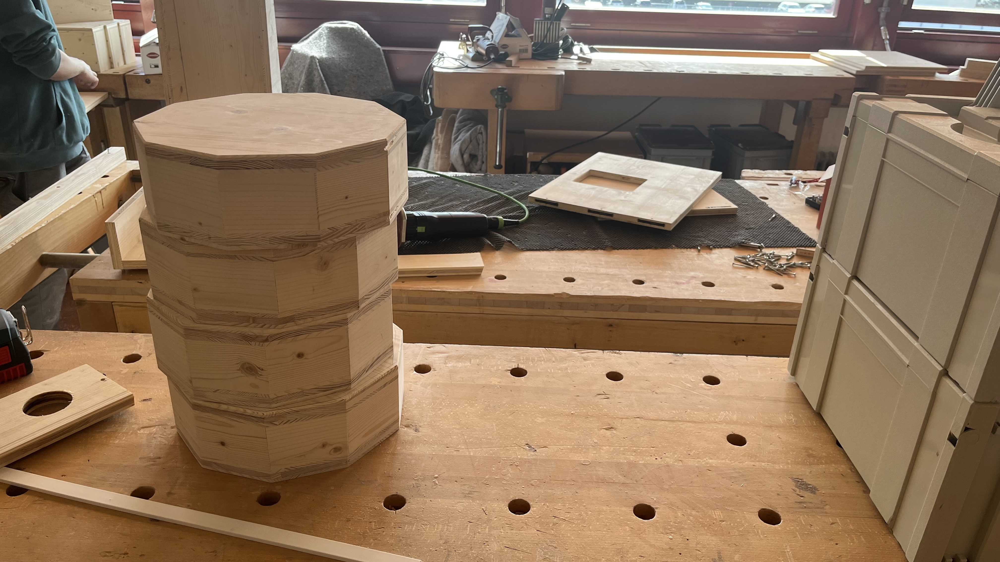
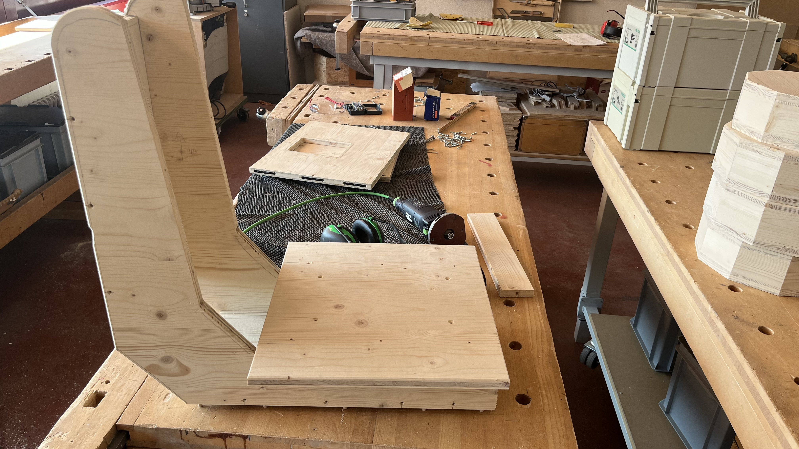
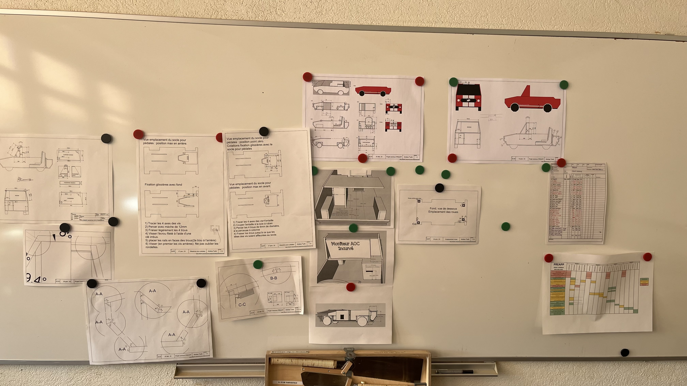

Accueil
Présentation
Notre avancée
Visualisation 3D
Qui sommes-nous ?
Avancée de la meunuiserie : Les menuisiers se sont occupés de la fabrication de toute la façade extérieure, le capot, le siège, la peinture, etc. Voici quelques images prises pendant le projet.
1 / 7

2 / 7

3 / 7

4 / 7

5 / 7

6 / 7

7 / 7

❮
❯